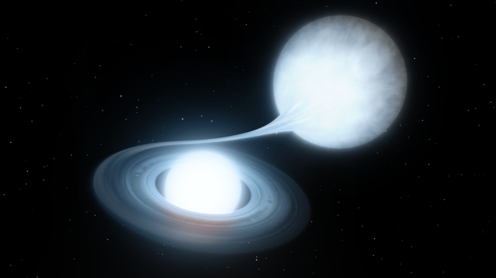
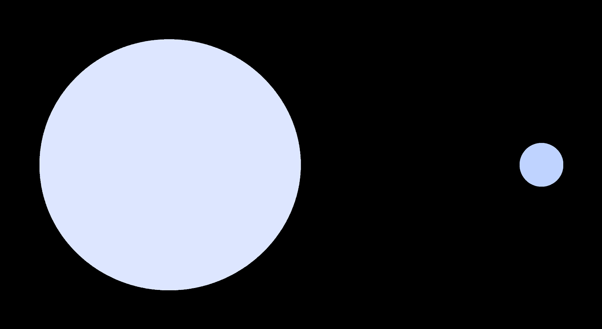

About Me

Current I'm currently working at Caltech as a Postdoc on the ZTF project and work on my personal research focussed on white dwarf binaries. For ZTF, I work on the classification of variable objects and I'm the Galactic science working group lead for the ZTF collaboration.
Research Interests: Time-domain astronomy, eclipsing white dwarf binaries, data mining & machine learning, optical imaging surveys, fast transients.
Publications: ADS.
Education:
PhD Astrophysics
As a graduate student at Radboud University, I used the Palomar Transient Factory (PTF) to study the optical variable sky I used the Palomar Transient Factory (PTF) to study the optical variable sky (also here). The first half focusses on fast optical transients. The second half is about eclipsing white dwarf binary systems in the PTF data.
MSc Astrophysics
I obtained my Master degree from Radboud University Nijmegen (NL). I also attended courses at the University of Amsterdam and Leuven University (BE). The subject of my Master Thesis is PTF1108ag, a new eclipsing white dwarf - red dwarf binary star.
BSc Physics
I obtained a Bachelor degree in physics and astronomy from Radboud University Nijmegen (NL), I did a 3 month project. under supervision of Gijs Nelemans, analysing spectra of pulsating SdO star SDSS J160043.6+074802.9 ( Woudt et al. 2006).
Research

ZTF variable star classification
Periodic variability is one of the most important tools used to study stellar physics. In addition, objects in a close orbit (exoplanets or other stars) can periodically block some of the light of the star. Finding exoplanets is important in order to answer investigate how common life is in our Galaxy. A binary star can significantly change the evolution of both stars and can result in many exotic explosions, the key science project for ZTF. Currently, I am working on a data analysis pipeline to categorise all variable stars ZTF observed. This involves the use of traditional methods (period-finding using GPUs), and also involve novel methods like machine learning classification.
Eclipsing AM CVn stars
AM CVn-type systems are ultra-compact, hydrogen-deficient accreting binaries with degenerate or semi-
degenerate donors. The biggest open question regarding AM CVn binaries is the formation channel
(white dwarf, Helium star, or evolved CV channel). By searching ZTF data, I've discovered 4 new eclipsing AM CVn systems, more than doubling the known sample. With high cadence followup lightcurve, I've been able to constrain the donor mass and radius, which shows that the donors are large (have a high entropy). Combined with spectroscopy, this suggests that these systems have been formed through the white dwarf channel.

Dark companions of white dwarfs
White dwarfs binaries with dark, low-mass companions; red dwarfs, brown-dwarfs and exoplanets (dM, BD,
planet) are important in a broad range of astrophysical contexts. They are a tool to accurately measure white dwarf properties, study processes of binary evolution, are progenitors and final fate of cataclysmic variables, are potentially SNIa progenitor candidates, emit gravitational wave radiation, and in the case of planet companions, represent the final fate of the solar-system. With ZTF, we have now found 604 new non-acreting eclipsing WD systems with low-mass companions, a 8-fold increase over the currently published sample. I'm currently working on characterizing different subset of this sample; period bouncers, magnetic white dwarfs and planet candidates.
Old work
Sky2Night, a search for fast PTF transients
For my PhD research worked on the Sky2Night project with the Palomar Transient Factory. The motivation for the Sky2Night project was twofold. The first is exploration: with automated survey telescopes, many new types of transients have been discovered. These new transients were typically visible for a few weeks. One goal of the Sky2Night projects was to determine if there are also unknown types of transients which are visible for only a few hours. The second motivation was the prospect of finding kilonovae, the optical transient caused by two merging neutron stars. Merging neutron stars emit gravitational waves, which can be detected by gravitational wave observatories (aLIGO & Virgo). However, when aLIGO & Virgo detect the gravitational waves emitted by a binary neutron star merger, they can only give a rough indication were this merger occurred in the sky. Therefore, if we want to find the kilonova, a large area needs to be searched to find it. Such a large area contains many other transients besides the kilonovae. The second goal of the Sky2Night project is to determine what these other transients are and how to recognise them.
EL CVn binaries
EL CVn binaries are eclipsing pre-white dwarfs and A-main sequence stars. The light curve of these systems shows shallow eclipses, 10% or less, and the targets are relatively blue. This type of binary was first discovered by the Kepler satellite. Indications are that these systems are quite common, and SWASP found 17 of these systems (V<13). I used PTF light curve statistics and Pan-STARRS colours to find new systems. I trained a machine learning classifier to find more of these systems. In total, 36 new EL CVn binaries were found in the PTF light curve database. The figure shows a 3D view of the colour parameter space and the location of the EL CVn systems. I have also applied ML methods to find more eclipsing WD-RD systems in the PTF database. These are shown as yellow in the 3D figure. Work is ongoing to use the successor of PTF, the Zwicky Transient Facility to classify all eclipsing binaries in the northern sky.

Contact
email: jvanroes@caltech.edu
Visiting address: 1216 E. California Blvd, Pasadena, CA, USA
Postal addres: 1200 E. California Blvd, MLC 290-17, Pasadena, CA 91125, USA
Caltech: Cahill building, room 354